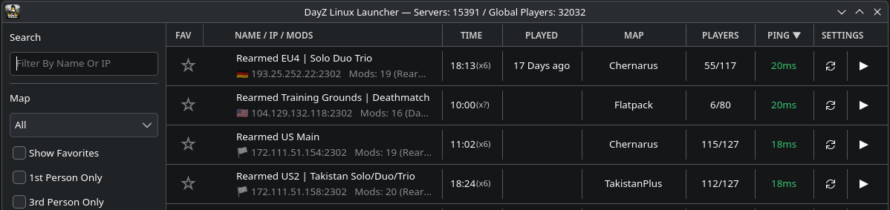
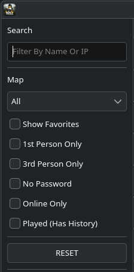
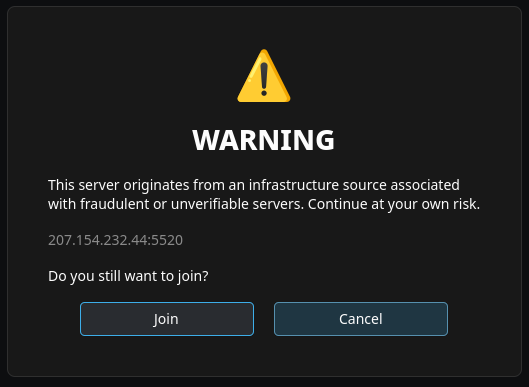
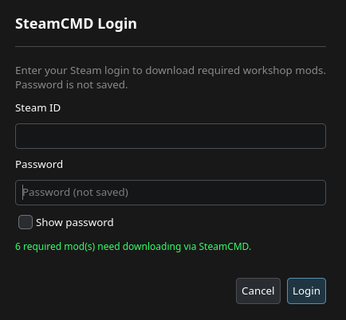
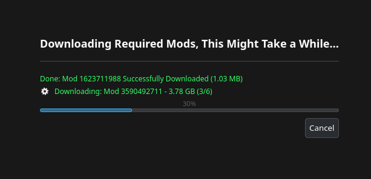

DayZ Linux Launcher (DZLL) Documentation
This is the manual page for DayZ Linux Launcher, In this manual you will find everything you need
to use the app and find your favourite servers.
DayZ Linux Launcher User Manual
When you start DZLL, it performs a short startup sequence:
1. Loads your saved settings (filters, launch options, mod handling preferences, etc.).
2. Loads the server database (servers.db) generated by DZLL-Forge.
3. Fetches and loads the blocklist (blocklist.json, v2) used to hide or warn about suspicious servers (depending on your settings).
4. Builds the server list UI and applies:
- Search Text
- Filter Toggles
- Sort Mode
- Favorites Filter (if enabled)
- Blocklist Visibility Rules (if enabled
Server database (servers.db)
DZLL reads a prebuilt database created by DZLL-Forge. This DB contains:
- Server Name
- Address (IP:PORT)
- Map
- Player Counts (when available)
- Flags Like 1PP / Password (where known)
- Server Mod List (Workshop IDs + Names) When Available
- DZLL does not scrape or “hunt” servers itself. It trusts the curated DB output
Blocklist (blocklist.json v2)
DZLL also loads a blocklist file used to classify servers as:
- Allowed
- Soft-blocked (hidden when blocklist filtering is enabled)
- Hard-blocked / IP-hard-blocked (always warns before joining if blocklist is loaded)
Blocklist behavior is designed to be fail-open:
- If the blocklist can’t be fetched or parsed, DZLL still runs and shows servers normally

Fig 1. Example of the launcher populated with servers and blocklist loaded.
The main window is centered around the server list.
Each row typically includes:
- Server name
- Map
- Players (when known)
- Ping (when available)
- Indicators (example: 1PP/3PP, lock/password)
- A Join button to start the join workflow
Sorting
You can sort servers using the header controls (common sorts include):
- Ping
- Players
- Recently played (if tracked)
- Possibly name/map depending on build
Sorting updates immediately.
Search
The search box filters servers as you type. It is used for:
- quick lookup by server name/map
- locating a specific IP:PORT quickly
Exact IP:PORT search has a special role for blocked servers:
- If blocklist filtering hides a server, typing the exact IP:PORT can reveal it (see Blocklist section below).
Common filtersDZLL supports several filter toggles (the exact set depends on your build, but commonly includes):
- Favorites only
- Online only
- 1PP or 3PP only
- No password
- Map filter
- Additional “quality of life” filters (e.g., hide test servers if enabled in settings)

Fig 2. The Search and filter control panel.Filters are applied live, meaning:
- Toggle changes update the list immediately
- Changes combine with search + sort + favourites
Favourites
You can mark servers as favourites and then:
- Filter to favorites-only
- Keep your regular servers pinned by habit
Favorites are saved locally and persist across restarts
DZLL refreshes and updates in a way designed to avoid UI jitter and “list jumping”.
Typical behavior:
- DZLL keeps the server list responsive while updating server status fields.
- Filters and sort order are preserved during refresh.
- If a server becomes unavailable/offline, DZLL reflects that in its display.
If your build shows “counts in title bar” (servers loaded / players online), these update when refresh updates are applied.
The blocklist is designed to protect users from suspicious servers while still allowing power-users to override intentionally
Blocklist filtering
If Enable Blocklist Filtering is ON:
- Soft-blocked and hard-blocked servers are hidden from the list
If it’s OFF:
- The list behaves normally (servers are shown)
Exact IP:PORT revealEven if a server is hidden by blocklist filtering:
- typing the exact IP:PORT into search can reveal it
This is intended as an “I know what I’m doing” escape hatch
Join warnings (hard / ip-hard)
If the blocklist is loaded and DZLL classifies the selected server as:
- Hard-blocked, or
- IP-hard-blocked
Then DZLL will show a warning overlay every time you press Join
- You can Cancel to back out
- You can Join anyway if you accept the risk

Fig 3. An example of the warning overlay for suspicious servers
When you press Join, DZLL runs a “preflight” and then performs the join flow.
Join preflight
DZLL checks:
- The server address is valid (IP:PORT)
- The server isn’t blocked (or you confirmed the warning if it is)
- Whether mod handling is required (server has mod list and mod handling is enabled)
- Whether Steam / DayZ launch prerequisites are present (as applicable)
If the server has no mods (or mod handling is disabled)
DZLL launches DayZ via Steam using a connect string:
- Steam starts DayZ
- DayZ joins the server using -connect=IP:PORT (and related params), after user clicks play
in the DayZ official launcher.
If the server requires mods (mod handling enabled)
DZLL runs the mod workflow:
- Reads required mod list for the server (Workshop IDs)
- Uses SteamCMD to download/update the required Workshop mods
- Builds symlinks in the DayZ Launcher “watch folder” inside the Proton prefix
- Ensures DayZ Launcher preset/state is ready (so the DayZ Launcher detects mods properly)
- Launches DayZ with the server connect details
The goal is to reliably match the way the official DayZ Launcher expects mods to be discovered/loaded on Proton

Fig 4. An example of the SteamCMD Login Panel

Fig 5. SteamCMD mod downloadsSupport Development
DZLL is free and open source. If you find it useful and want to help keep development moving, you can support the project with a donation or star the repository on GitHub.